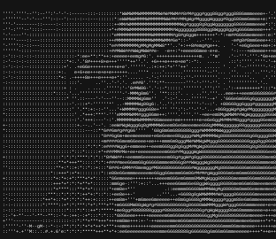

Hello World!!

Bienvenidos a este portafolio, mi nombre es Tiago Martínez, soy un desarrollador Full-Stack Junior y un gran entusiasta de la programación enfocado principalmente en Web Development. Aspiro a trabar profesionalmente con tecnologías de la actualidad y dejar de lado la progrmación tediosa y antigua ¡¡Aprenda más de mí!!
- "Finalmente con domino funcional!"
Mira mi último Proyecto :D
Un pequeño TODO construido como proyecto por diversión:
Nada muy especial
- Backend
- TypeScript
- NodeJS
- ExpressJS
- JS Web Token
- Frontend
- TypeScript
- React + Vite
- Tailwindcss